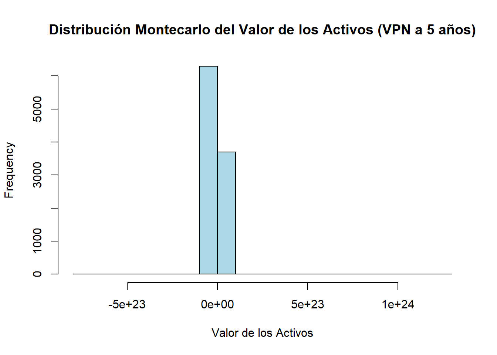

# Instalar paquetes necesarios
if (!require(quantmod)) install.packages("quantmod")Cargando paquete requerido: quantmodCargando paquete requerido: xtsCargando paquete requerido: zoo
Adjuntando el paquete: 'zoo'The following objects are masked from 'package:base':
as.Date, as.Date.numericCargando paquete requerido: TTRRegistered S3 method overwritten by 'quantmod':
method from
as.zoo.data.frame zoo if (!require(dplyr)) install.packages("dplyr")Cargando paquete requerido: dplyr
######################### Warning from 'xts' package ##########################
# #
# The dplyr lag() function breaks how base R's lag() function is supposed to #
# work, which breaks lag(my_xts). Calls to lag(my_xts) that you type or #
# source() into this session won't work correctly. #
# #
# Use stats::lag() to make sure you're not using dplyr::lag(), or you can add #
# conflictRules('dplyr', exclude = 'lag') to your .Rprofile to stop #
# dplyr from breaking base R's lag() function. #
# #
# Code in packages is not affected. It's protected by R's namespace mechanism #
# Set `options(xts.warn_dplyr_breaks_lag = FALSE)` to suppress this warning. #
# #
###############################################################################
Adjuntando el paquete: 'dplyr'The following objects are masked from 'package:xts':
first, lastThe following objects are masked from 'package:stats':
filter, lagThe following objects are masked from 'package:base':
intersect, setdiff, setequal, union# Cargar librerías
library(quantmod)
library(dplyr)
# 1. Descargar datos financieros de Apple (datos diarios desde 2000)
getSymbols("AAPL", src = "yahoo", from = "2000-01-01", to = Sys.Date())[1] "AAPL"data <- AAPL # Renombrar los datos descargados para simplificar
# Convertir datos a trimestrales usando la función to.quarterly()
ventas <- to.quarterly(Cl(data)) # Convertir los precios de cierre ajustados a datos trimestrales
ventas <- ventas[, 4] # Tomar sólo el último valor del trimestre (precio de cierre ajustado)
colnames(ventas) <- "ventas"
ventas <- as.data.frame(ventas)
ventas$ventas <- as.numeric(ventas$ventas) # Asegurarse de que las ventas sean numéricas
# 2. Promedio y varianza de la variación de las ventas trimestrales
ventas$var_ventas <- c(NA, diff(ventas$ventas)) # Calcular la variación trimestral de las ventas
mean_var <- mean(ventas$var_ventas, na.rm = TRUE) # Promedio sin tener en cuenta los NA
var_var <- var(ventas$var_ventas, na.rm = TRUE) # Varianza sin tener en cuenta los NA
cat("Promedio de la variación de las ventas trimestrales:", mean_var, "\n")Promedio de la variación de las ventas trimestrales: 2.278661 cat("Varianza de la variación de las ventas trimestrales:", var_var, "\n")Varianza de la variación de las ventas trimestrales: 113.0794 # 3. Crear los supuestos para los costos
costos_fijos_pct <- 0.20 # 20% de las ventas
costos_variables_pct <- 0.10 # 10% de las ventas
capex_pct <- 0.15 # 15% de las ventas
wk_pct <- 0.05 # 5% de las ventas
wacc <- 0.10 # WACC del 10%
# 4. Simulación de Montecarlo para 5 años con datos trimestrales
n_simulaciones <- 10000 # Número de simulaciones
trimestres_por_anio <- 4 # Trimestres por año
n_trimestres_total <- 5 * trimestres_por_anio # 5 años en trimestres
set.seed(123) # Para reproducibilidad
# Lista para almacenar los resultados de la simulación
resultados_simulaciones <- vector("list", n_simulaciones)
# Proceso de simulación
simulaciones <- replicate(n_simulaciones, {
# Proyectar las ventas trimestrales a lo largo de 5 años
ventas_inicial <- ventas$ventas[nrow(ventas)] # Tomar la última venta como base
ventas_proyectadas <- ventas_inicial * cumprod(1 + rnorm(n_trimestres_total, mean = mean_var, sd = sqrt(var_var))) # Ventas proyectadas a nivel trimestral
# Calcular costos en función de las ventas proyectadas
costos_fijos_sim <- ventas_proyectadas * costos_fijos_pct
costos_variables_sim <- ventas_proyectadas * costos_variables_pct
capex_sim <- ventas_proyectadas * capex_pct
wk_sim <- ventas_proyectadas * wk_pct
# Flujo de caja libre (ingresos - costos) trimestral
flujo_caja_libre_sim <- ventas_proyectadas - (costos_fijos_sim + costos_variables_sim + capex_sim + wk_sim)
# Guardar los resultados de esta simulación en una tabla
tabla_proyeccion <- data.frame(
Trimestre = 1:n_trimestres_total,
Ventas = ventas_proyectadas,
Costos_Fijos = costos_fijos_sim,
Costos_Variables = costos_variables_sim,
WK = wk_sim,
CAPEX = capex_sim,
Flujo_Caja_Libre = flujo_caja_libre_sim
)
# Almacenar la tabla en la lista de simulaciones
resultados_simulaciones[[length(resultados_simulaciones) + 1]] <- tabla_proyeccion
# Sumar el flujo de caja libre trimestral
flujo_caja_anual_sim <- sapply(1:5, function(anio) sum(flujo_caja_libre_sim[((anio-1)*trimestres_por_anio + 1):(anio*trimestres_por_anio)]))
# Traer los flujos de caja a valor presente usando el WACC
flujos_vp <- flujo_caja_anual_sim / (1 + wacc)^(1:5)
sum(flujos_vp) # Suma de los flujos de caja descontados como proxy del valor de los activos
})
# 5. Mostrar tabla de la primera simulación como ejemplo
cat("Tabla de la primera simulación de proyección trimestral de 5 años:\n")Tabla de la primera simulación de proyección trimestral de 5 años:print(resultados_simulaciones[[1]])NULL# Resultado de la simulación
valor_activos_montecarlo <- mean(simulaciones) # Promedio del valor de activos en las simulaciones
cat("\nValor estimado de los activos de Apple mediante Montecarlo (VPN a 5 años):", valor_activos_montecarlo, "\n")
Valor estimado de los activos de Apple mediante Montecarlo (VPN a 5 años): 1.194472e+20 # Histograma de las simulaciones
hist(simulaciones, main = "Distribución Montecarlo del Valor de los Activos (VPN a 5 años)",
xlab = "Valor de los Activos", col = "lightblue", border = "black")